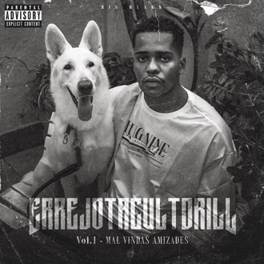

é o terceiro álbum de estúdio do artista carioca Big Bllakk. O álbum, que conta com oito faixas, foi lançado pelo selo Rock Danger, um dos principais expoentes do drill no Brasil, e conta com feats de Juyè, LEALL, Sant e MG CDD.

1 - Aventura (Ft. Juyè)
2 - Perigo e Adrenalina (Ft. LEALL)
3 - Vem Fácil
4 - Melhor Forma
5 - Chove Chuva (Ft. Sant)
6 - Concreto
7 - Um Dois
8 - O Retorno do Boombap (Ft. MG CDD)